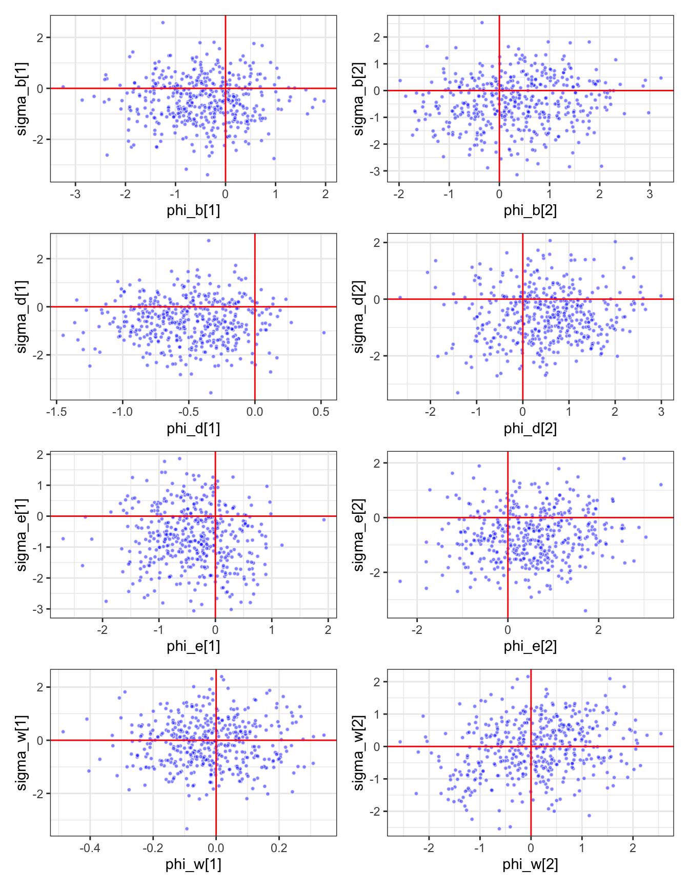

Show the code
library(sf)
sf::sf_use_s2(FALSE)
library(RevGadgets)
library(patchwork)
library(ape)
library(coda)
library(here)
library(tidyverse)Packages
library(sf)
sf::sf_use_s2(FALSE)
library(RevGadgets)
library(patchwork)
library(ape)
library(coda)
library(here)
library(tidyverse)Plot the regions and their colors.
bioregions <- st_read(here("biogeography/data_ignore/bioregions.geojson"))Reading layer `bioregions' from data source
`/Users/mari/repos/colias_hostrep/biogeography/data_ignore/bioregions.geojson'
using driver `GeoJSON'
Simple feature collection with 7 features and 1 field
Geometry type: MULTIPOLYGON
Dimension: XY
Bounding box: xmin: -180 ymin: -55.9795 xmax: 180 ymax: 83.6236
Geodetic CRS: WGS 84palette_fill <- c("NT" = "#FF8C01",
"NA" = "#DA3541",
"EP" = "#00A2FF",
"PTP" = "#F8C700",
"WP" = "#013459",
"AF" = "#EF9FBA",
"SA" = "white")
palette_col <- c("NT" = "#FF8C01",
"NA" = "#DA3541",
"EP" = "#00A2FF",
"PTP" = "#F8C700",
"WP" = "#013459",
"AF" = "#EF9FBA",
"SA" = "grey30")
ggplot(bioregions) +
geom_sf(aes(fill = biome, col = biome)) +
scale_fill_manual(values = palette_fill) +
scale_color_manual(values = palette_col) +
theme_bw()
Determine paths of output files from RevBayes MULTIFIG analysis and to save figures.
log_file <- here("biogeography/without_zerene/server_ignore/output/altmean/run1/model.log")
log_file2 <- here("biogeography/without_zerene/server_ignore/output/altmean/run2/model.log")
geo_log_file <- here("biogeography/without_zerene/server_ignore/output/altmean/run2/geo_features.log")
tree_file <- here("biogeography/without_zerene/server_ignore/output/altmean/run2/ase.tre")
state_label_file <- here("biogeography/without_zerene/server_ignore/output/run2/state_labels.txt")
states_log_file <- here("biogeography/without_zerene/server_ignore/output/altmean/run2/states.log")
anc_states_file <- here("biogeography/without_zerene/server_ignore/output/run2/anc_states.pdf")
plot_2d_file <- here("biogeography/without_zerene/server_ignore/output/run2/2d_plots.pdf")The first things to do is to check that independent MCMC chains have converged to the same posterior distribution.
log1 <- read.table(log_file, header = TRUE) %>% filter(Iteration > 5000)
log2 <- read.table(log_file2, header = TRUE) %>% filter(Iteration > 5000)
# take one parameter of each type to test
chain1 <- log1[,c(5,132,141,267,268,271,272,276,281,285,288,289,291)]
chain2 <- log2[,c(5,132,141,267,268,271,272,276,281,285,288,289,291)]
# Convergence test
gelman.diag(mcmc.list(as.mcmc(chain1), as.mcmc(chain2)), multivariate = FALSE)Potential scale reduction factors:
Point est. Upper C.I.
lambda.1. 1.007 1.014
m_w.1..1. 1.192 1.385
mu.3. 1.013 1.035
phi_b.2. 1.003 1.020
phi_d.1. 1.000 1.002
phi_e.2. 1.011 1.013
phi_w.1. 1.002 1.011
r_e.3. 1.013 1.035
rho_b 0.998 0.998
sigma_b.1. 1.009 1.038
sigma_d.2. 1.002 1.018
sigma_e.1. 1.006 1.038
sigma_w.1. 1.010 1.048effectiveSize(chain1) lambda.1. m_w.1..1. mu.3. phi_b.2. phi_d.1. phi_e.2. phi_w.1.
450.0000 111.7976 450.0000 450.0000 450.0000 450.0000 531.3009
r_e.3. rho_b sigma_b.1. sigma_d.2. sigma_e.1. sigma_w.1.
450.0000 315.1114 450.0000 256.4816 363.8716 136.4956 effectiveSize(chain2) lambda.1. m_w.1..1. mu.3. phi_b.2. phi_d.1. phi_e.2. phi_w.1.
450.0000 100.3746 386.1065 369.2990 541.5207 309.8720 744.9035
r_e.3. rho_b sigma_b.1. sigma_d.2. sigma_e.1. sigma_w.1.
386.1065 335.5523 389.5816 304.8829 386.4297 169.0328 Because there is one categorical and one quantitative parameter for each feature (e.g. area, distance, and altitude), we will look at the joint probability for each pair of parameters that correspond to the effect of the same feature over the same process (e.g. dispersal, extinction, between-region speciation and within-region speciation).
# read logs from MCMC
trace <- readTrace(path=log_file2)
# 2d density
proc_groups <- c("_b", "_d", "_e", "_w")
phis <- array(data = paste0("phi",proc_groups), dim = c(4,1)) %>%
apply(1, FUN = function(x) paste0(x,"[",1:2,"]")) %>%
as.vector()
sigmas <- array(data = paste0("sigma",proc_groups), dim = c(4,1)) %>%
apply(1, FUN = function(x) paste0(x,"[",1:2,"]")) %>%
as.vector()
plot_2d <- function(trace, x = NULL, y = NULL){
p <- ggplot(trace[[1]], aes(x = .data[[x]], y = .data[[y]])) +
geom_point(shape = 21, alpha = 0.5, colour = "white", fill = "blue", size = 1) +
geom_hline(yintercept = 0, col = "red") +
geom_vline(xintercept = 0, col = "red") +
theme_bw()
p
}
list_2d <- list()
for(i in seq_along(sigmas)){
list_2d[[i]] <- plot_2d(trace, x = phis[i], y = sigmas[i])
}
wrap_plots(list_2d, ncol=2)
# calculate joint pp
trace_d <- trace[[1]] %>%
dplyr::select(Iteration, `phi_d[1]`, `sigma_d[1]`) %>%
mutate(joint_p = case_when(`phi_d[1]` >= 0 & `sigma_d[1]` >= 0 ~ "both_positive",
TRUE ~ "one_or_both_negative"))
trace_e <- trace[[1]] %>%
dplyr::select(Iteration, `phi_e[1]`, `sigma_e[1]`) %>%
mutate(joint_p = case_when(`phi_e[1]` >= 0 & `sigma_e[1]` >= 0 ~ "both_positive",
TRUE ~ "one_or_both_negative"))
trace_b <- trace[[1]] %>%
dplyr::select(Iteration, `phi_b[1]`, `sigma_b[1]`) %>%
mutate(joint_p = case_when(`phi_b[1]` >= 0 & `sigma_b[1]` >= 0 ~ "both_positive",
TRUE ~ "one_or_both_negative"))
trace_w <- trace[[1]] %>%
dplyr::select(Iteration, `phi_w[1]`, `sigma_w[1]`) %>%
mutate(joint_p = case_when(`phi_w[1]` >= 0 & `sigma_w[1]` >= 0 ~ "both_positive",
TRUE ~ "one_or_both_negative"))Effect of distance between areas on dispersal
trace_d %>%
group_by(joint_p) %>%
summarise(n = n()/nrow(.))# A tibble: 2 × 2
joint_p n
<chr> <dbl>
1 both_positive 0.0111
2 one_or_both_negative 0.989 Effect of area size on extinction
trace_e %>%
group_by(joint_p) %>%
summarise(n = n()/nrow(.))# A tibble: 2 × 2
joint_p n
<chr> <dbl>
1 both_positive 0.0489
2 one_or_both_negative 0.951 Effect of distance on between-region speciation
trace_b %>%
group_by(joint_p) %>%
summarise(n = n()/nrow(.))# A tibble: 2 × 2
joint_p n
<chr> <dbl>
1 both_positive 0.0867
2 one_or_both_negative 0.913 Effect of area size on within-region speciation
trace_w %>%
group_by(joint_p) %>%
summarise(n = n()/nrow(.))# A tibble: 2 × 2
joint_p n
<chr> <dbl>
1 both_positive 0.202
2 one_or_both_negative 0.798# calculate joint pp
trace_d_alt <- trace[[1]] %>%
dplyr::select(Iteration, `phi_d[2]`, `sigma_d[2]`) %>%
mutate(joint_p = case_when(`phi_d[2]` >= 0 & `sigma_d[2]` >= 0 ~ "both_positive",
TRUE ~ "one_or_both_negative"))
trace_e_alt <- trace[[1]] %>%
dplyr::select(Iteration, `phi_e[2]`, `sigma_e[2]`) %>%
mutate(joint_p = case_when(`phi_e[2]` >= 0 & `sigma_e[2]` >= 0 ~ "both_positive",
TRUE ~ "one_or_both_negative"))
trace_b_alt <- trace[[1]] %>%
dplyr::select(Iteration, `phi_b[2]`, `sigma_b[2]`) %>%
mutate(joint_p = case_when(`phi_b[2]` >= 0 & `sigma_b[2]` >= 0 ~ "both_positive",
TRUE ~ "one_or_both_negative"))
trace_w_alt <- trace[[1]] %>%
dplyr::select(Iteration, `phi_w[2]`, `sigma_w[2]`) %>%
mutate(joint_p = case_when(`phi_w[2]` >= 0 & `sigma_w[2]` >= 0 ~ "both_positive",
TRUE ~ "one_or_both_negative"))Effect of distance between areas on dispersal
trace_d_alt %>%
group_by(joint_p) %>%
summarise(n = n()/nrow(.))# A tibble: 2 × 2
joint_p n
<chr> <dbl>
1 both_positive 0.18
2 one_or_both_negative 0.82Effect of area size on extinction
trace_e_alt %>%
group_by(joint_p) %>%
summarise(n = n()/nrow(.))# A tibble: 2 × 2
joint_p n
<chr> <dbl>
1 both_positive 0.187
2 one_or_both_negative 0.813Effect of distance on between-region speciation
trace_b_alt %>%
group_by(joint_p) %>%
summarise(n = n()/nrow(.))# A tibble: 2 × 2
joint_p n
<chr> <dbl>
1 both_positive 0.244
2 one_or_both_negative 0.756Effect of area size on within-region speciation
trace_w_alt %>%
group_by(joint_p) %>%
summarise(n = n()/nrow(.))# A tibble: 2 × 2
joint_p n
<chr> <dbl>
1 both_positive 0.304
2 one_or_both_negative 0.696Posterior distribution of individual parameters (Supplementary)
sigma_list <- list()
for(i in seq_along(sigmas)){
sigma_list[i] <- plotTrace(trace, vars = sigmas[i])
}
wrap_plots(sigma_list, ncol = 2)phi_list <- list()
for(i in seq_along(phis)){
phi_list[i] <- plotTrace(trace, vars = phis[i])
}
wrap_plots(phi_list, ncol = 2)tree <- read.tree(here("biogeography/without_zerene/data/tree_colias_geo.tre"))
original_states <- read.csv(here("biogeography/without_zerene/data/colias_geo_tbl.csv")) %>%
arrange(factor(species, levels = tree$tip.label))
identical(sort(tree$tip.label), sort(original_states$species))[1] TRUErange_matrix <- read.csv(here("biogeography/without_zerene/data/colias_geo_mtx.csv"), row.names = 1)
area_codes <- rep(1, ncol(range_matrix))
names(area_codes) <- colnames(range_matrix)
area_codesSEA EPa WPa NAr PTH Afr NTr
1 1 1 1 1 1 1 state_labels <- read.csv(here("biogeography/without_zerene/server_ignore/output/altmean/run2/state_labels.txt"),
colClasses = c("numeric","character")) %>%
separate_wider_position(range, widths = area_codes) %>%
pivot_longer(2:8, names_to = "area", values_to = "present") %>%
filter(present == 1) %>%
select(-present) %>%
group_by(state) %>%
reframe(combination = str_c(area, collapse = "+"))
labels_all <- pull(state_labels, combination) %>% as.character()
names(labels_all) <- state_labels$state
states <- processAncStates(tree_file, state_labels = labels_all)
|
| | 0%
|
|========================================| 100%Plot ancestral range distributions
states_plot <- sort(unique(states@data$end_state_1))
palette <- c("#EF9FBA","#00A2FF","#AA74A1","#7CB580","#347FD5","#6E4672","#9A6F4F","#C9722C",
"#009F52","#DA3541","#FF8C01","#F8C700","#00D164","#013459","#C38CA8","#097C65")
names(palette) <- states_plot
plotAncStatesMAP(t=states,
cladogenetic = TRUE,
tree_layout="rectangular",
tip_labels_offset = 0.1,
tip_labels_size = 3,
node_color_as="state",
node_color=palette,
state_transparency = 0.85,
node_size = c(0.7,2.5),
tip_states_size = 2,
node_size_as="state_posterior",
timeline = TRUE,
geo = FALSE)Investigating uncertainty around root state
states_log <- read.table(states_log_file, header = TRUE) %>%
select(contains(c("131", "130", "129"))) %>%
select(contains("end"))
# Root
states_131 <- states_log %>%
select("end_131") %>%
group_by(end_131) %>%
summarise(freq = n()) %>%
rename(state = end_131) %>%
left_join(state_labels) %>%
arrange(desc(freq)) %>%
mutate(prob = freq/501,
cum_prob = cumsum(prob))
states_131# A tibble: 42 × 5
state freq combination prob cum_prob
<dbl> <int> <chr> <dbl> <dbl>
1 108 183 EPa+WPa+NAr+PTH+NTr 0.365 0.365
2 120 46 SEA+EPa+WPa+NAr+PTH+NTr 0.0918 0.457
3 125 45 EPa+WPa+NAr+PTH+Afr+NTr 0.0898 0.547
4 84 35 EPa+WPa+PTH+NTr 0.0699 0.617
5 87 30 WPa+NAr+PTH+NTr 0.0599 0.677
6 86 26 EPa+NAr+PTH+NTr 0.0519 0.729
7 67 13 EPa+WPa+NAr+PTH 0.0259 0.754
8 115 12 EPa+WPa+PTH+Afr+NTr 0.0240 0.778
9 126 11 SEA+EPa+WPa+NAr+PTH+Afr+NTr 0.0220 0.800
10 105 10 SEA+EPa+WPa+PTH+NTr 0.0200 0.820
# ℹ 32 more rows# Ancestor of Norther hemisphere clade
states_130 <- states_log %>%
select("end_130") %>%
group_by(end_130) %>%
summarise(freq = n()) %>%
rename(state = end_130) %>%
left_join(state_labels) %>%
arrange(desc(freq)) %>%
mutate(prob = freq/501,
cum_prob = cumsum(prob))
states_130# A tibble: 36 × 5
state freq combination prob cum_prob
<dbl> <int> <chr> <dbl> <dbl>
1 67 155 EPa+WPa+NAr+PTH 0.309 0.309
2 108 107 EPa+WPa+NAr+PTH+NTr 0.214 0.523
3 125 27 EPa+WPa+NAr+PTH+Afr+NTr 0.0539 0.577
4 98 26 SEA+EPa+WPa+NAr+PTH 0.0519 0.629
5 103 26 EPa+WPa+NAr+PTH+Afr 0.0519 0.681
6 120 23 SEA+EPa+WPa+NAr+PTH+NTr 0.0459 0.727
7 34 19 EPa+WPa+PTH 0.0379 0.764
8 84 18 EPa+WPa+PTH+NTr 0.0359 0.800
9 87 12 WPa+NAr+PTH+NTr 0.0240 0.824
10 37 9 WPa+NAr+PTH 0.0180 0.842
# ℹ 26 more rowsSpeciation rates
states_plot <- sort(unique(states@data$end_state_1))
anc_tip_states <- state_labels %>% filter(combination %in% states_plot)
lambdas <- paste0("lambda.",anc_tip_states$state,".")
lambda_log <- log2 %>% select(any_of(lambdas))
lambdas_for_plot <- lambda_log %>% pivot_longer(everything(), names_to = "range", values_to = "value") %>%
mutate(n_regions = case_when(range %in% lambdas[1:6] ~ 1,
range %in% lambdas[7:11] ~ 2,
range %in% lambdas[12:14] ~ 3,
range == lambdas[15] ~ 4,
range == lambdas[16] ~ 5))
ggplot(lambdas_for_plot) +
geom_density(aes(value, group = range, fill = n_regions, col = n_regions), alpha = 0.3) +
labs(color = "Range size",
fill = "Range size",
x = "Speciation rate",
y = "Density") +
theme_bw()Extinction rates
mus <- paste0("mu.",anc_tip_states$state,".")
mu_log <- log2 %>% select(any_of(mus))
mus_for_plot <- mu_log %>% pivot_longer(everything(), names_to = "range", values_to = "value") %>%
mutate(n_regions = case_when(range %in% mus[1:6] ~ 1,
range %in% mus[7:11] ~ 2,
range %in% mus[12:14] ~ 3,
range == mus[15] ~ 4,
range == mus[16] ~ 5))
ggplot(mus_for_plot) +
geom_density(aes(value, group = range, fill = n_regions, col = n_regions), alpha = 0.3) +
labs(color = "Range size",
fill = "Range size",
x = "Extinction rate",
y = "Density") +
theme_bw()mus_for_plot %>%
group_by(n_regions) %>%
summarise(m = mean(value))# A tibble: 5 × 2
n_regions m
<dbl> <dbl>
1 1 0.0329
2 2 0
3 3 0
4 4 0
5 5 0